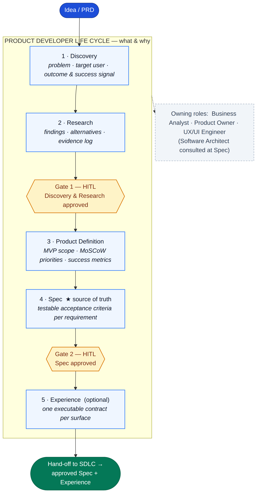
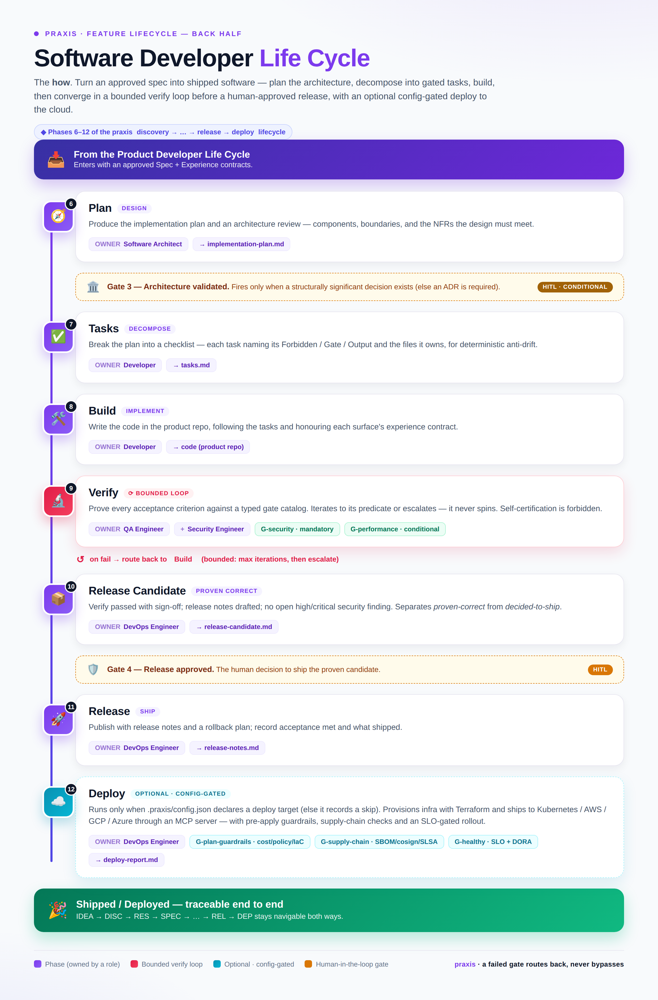

A skill factory
The skill-creator meta-skill is the pattern for creating skills — and skill-learner turns gaps an expert hits mid-task into new skills. Scaffold, tier, refine, learn, validate.
Plugin for Claude Code · Cursor · IntelliJ · Codex
praxis captures how your team works — processes, conventions and roles — once, in a format Claude Code reads and applies consistently across every project. Thirteen software-lifecycle experts, a meta-skill to author your own, and a versioned memory ledger of every decision.
# Install the plugins from the marketplace
> /plugin marketplace add marcrabadan/praxis
✓ marketplace added · 2 plugins available
> /plugin install praxis@praxis
✓ 13 experts + /new-feature + /review-changes
# Run a feature through the whole lifecycle
> /new-feature one-click checkout
Analyst → PO → Architect → Dev → QA → DevOps
✓ consolidated plan + decisions in the ledger
> It's not a product repo. It's the instructions Claude uses while working on your product repos.
The skill-creator meta-skill is the pattern for creating skills — and skill-learner turns gaps an expert hits mid-task into new skills. Scaffold, tier, refine, learn, validate.
The memory ledger records plans, decisions and implementations with a closed status set — pending → accepted | rejected | rolled-back — versioned in git.
Native to Claude Code, and generated for Cursor, IntelliJ and OpenAI Codex from a single source so they never drift.
A folder under .claude/skills/<name>/ with a SKILL.md that Claude Code discovers on its own from the frontmatter. No installers, no build step.
Write down how your team does one specific thing: act as an expert, follow a checklist, write requirements.
Type /<skill> or describe the task: Claude matches your request against the description and loads the skill on its own.
Every decision or artifact is saved to the memory ledger, with a status and reversible, so it survives across sessions.
---
name: software-architect
description: Adopts the Software Architect
persona to reason about system design,
trade-offs, NFRs, ADRs and design review.
---
# Software Architect
When consulted, reason about quality
attributes, choose patterns and record
the decision as an ADR…Invoke any of them with a command — /architect, /qa, /security — or just describe the task and Claude picks the right expert.
Requirements, user stories with INVEST, Gherkin criteria, process modeling and traceability.
Backlog, prioritization (MoSCoW/RICE/WSJF), sprint goals, DoR/DoD, roadmap and OKRs.
System design, trade-offs, NFRs, ADRs, pattern selection and architecture review.
Clean code, SOLID, TDD, error handling, safe refactoring and PR hygiene.
Test strategy and design, edge cases, bug reports and regression testing.
CI/CD, IaC, containers/Kubernetes, deployments, observability/SLOs and incidents — plus an optional Terraform multi-cloud deploy phase via MCP.
Threat modeling, OWASP Top 10, authn/authz, secrets, crypto and SAST/DAST/SCA gates.
Zero trust, IAM/SSO, segmentation, data protection, NIST/ISO/CIS and compliance.
Design systems, tokens, visual and interaction design, WCAG 2.2 AA accessibility.
Framework and rendering (CSR/SSR/SSG/RSC), state, routing, bundling and Core Web Vitals.
Components, client/server state, data fetching, forms, a11y and testing.
ETL/ELT pipelines, batch and streaming/CDC, dimensional modeling, dbt/Airflow and quality.
Model lifecycle, leakage-free features, evaluation, MLOps, drift and LLM/RAG with guardrails.
praxis is a skill factory: it doesn't just ship experts, it gives you the meta-skills to author new ones, sharpen the ones you have, and capture what an expert didn't know — all without leaving Claude Code.
skill-creator interviews you, classifies the skill into a tier (1–5), scaffolds the folder deterministically, and validates it — from a vague purpose to a working SKILL.md.
When an answer was wrong or incomplete for your team, the review flow updates the skill — turning a one-off correction into a durable rule, so you don't re-fix the same thing every time.
/learn (the skill-learner skill) catches a gap an expert hit mid-task — your Terraform/Azure convention, a runbook — and turns it into skill knowledge, proposed for your approval.
An expert lacks an org-specific convention or runbook — not public facts it already knows. skill-learner confirms it's worth capturing.
A reference inside the role expert by default; a brand-new skill only on evidence. Role experts stay language-agnostic — no skill-per-language sprawl.
It hands off to skill-creator to create or refine — never reinventing the scaffolder, always re-running the validator.
The result lands in the memory ledger as pending for you to accept. Nothing hardens into doctrine unattended.
> /learn capture how we lay out
Terraform for our Azure landing zone
# skill-learner
Gap is org-specific (not public HCL) ✓
No existing coverage → create
Home: devops-engineer/references/
azure-landing-zone.md (smallest fit)
Delegating to skill-creator… validated ✓
# memory ledger
Logged pending: "Learn: Azure
landing-zone convention" — accept to apply.Real workflows, organized by what you're trying to do — not by command name. Every command reads your codebase and the memory ledger at runtime.
The intake & triage front door — clarify (≤2 questions), classify (feature / bug / refinement / not-worth-doing), capture a pending ledger note, and recommend the right lifecycle command. It triages and routes; it never plans.
> /idea translate contracts into real-life consequences
— "if X happens, here's your risk", not a summary
Classification feature
Captured 20260611-…-a1b2 (pending · intake,feature)
Next /new-feature "contract-to-consequences translator"
✓ triaged · routed · nothing planned yetRun an idea through the full lifecycle — discovery → research → spec → plan → tasks → build → verify → release → deploy (optional). Each expert builds on the previous one's output; research precedes the spec and human-in-the-loop gates hold.
> /new-feature contract-to-consequences translator
Discovery ✓ problem, stakeholders, open questions
Research ✓ findings + evidence → Gate 1
Analyst ✓ spec: requirements + acceptance criteria
PO ✓ prioritized increments + sprint goal
Architect ✓ ADR-014-scenario-engine.md + diagram
Security ✓ threat model added (PII uploads detected)
Dev · QA · DevOps ✓ plan · tests · rollout
Release ✓ release notes → Gate 4
✓ consolidated plan · logged to ledger as pendingThe corrective lifecycle — triage → reproduce → diagnose → fix → verify. Reproduce before you diagnose, diagnose before you fix; no discovery/research ceremony.
> /fix-bug totals wrong when a coupon is removed
QA ✓ reproduced — failing case captured
Developer ✓ root cause traced (pricing.ts:88)
Developer ✓ minimal fix + regression test
QA ✓ verified — fixed & stays fixed
✓ minimal, regression-tested fixThe quality-only lifecycle — assess → plan → change → verify. Capture a baseline first, then refactor or optimize while keeping observable behavior identical.
> /refine extract the pricing calculator
Developer ✓ baseline captured (tests + golden output)
Developer ✓ behavior-preserving plan + rollback
Developer ✓ refactor applied — suite stays green
QA ✓ verified — behavior unchanged
✓ cleaner code · zero behavior changeQuick single-turn consultations. Each expert writes a doc or diagram automatically when the answer contains a substantial artifact.
> /architect event-driven or request-response
for order processing?
# Trade-off analysis
· throughput & decoupling → events
· consistency & simplicity → request/response
recommendation: events for fulfilment,
sync for the payment confirmation path
✓ wrote docs/decisions/ADR-021-orders.md
✓ architecture diagram generatedRoutes the current diff to the relevant experts and returns severity-tagged findings — Developer baseline plus others based on what changed.
> /review-changes HEAD~3..HEAD
🔴 Blocker [Security] uploaded contract stored unencrypted
storage.ts:42 — encrypt at rest
🟠 Should-fix [Dev] 180-line clause parser
parser.ts:88 — extract the scenario builder
🟡 Nit [QA] new branch lacks a test
for the expired-lease path
✓ 3 experts routed from the diffNo greenfield needed. Seed the ledger from your existing ADRs and git history, then document and review what's already there.
> /plugin install praxis@praxis # install
> /memory init # seed from ADRs + git log
> /memory list pending # accept what's current
> /docs # manuals from existing code
> /diagram # architecture overview
> /review-changes main..HEAD
✓ every later command now knows your historyConsult the ML/AI Engineer on framing, leakage, evaluation and drift. The data and ML experts join /new-feature automatically when a feature touches pipelines or models.
> /ml design an evaluation suite for our
support RAG chatbot
# Eval design
· golden set + faithfulness / context recall
· slice metrics by intent & doc age
leakage: dedup eval docs from the index
guardrails: refuse when retrieval is empty
✓ wrote docs/ml/rag-eval-plan.md
✓ drift + retraining triggers logged to ledgerThe Frontend Engineer diagnoses wasted renders, then implements the fix with accessibility built in — keyboard, focus and ARIA, not bolted on after.
> /frontend this modal re-renders on every
keystroke — why?
# Root cause
· context value is a new object each render
fix: memoize value + split read/write contexts
# While we're here
· add focus trap, aria-modal, Esc to close
✓ Modal.tsx patched · renders 12 → 1
✓ a11y: focus restore + labelled dialogThe Security Engineer runs STRIDE over a feature, maps findings to the OWASP Top 10 and hands back fixes ranked by severity — before the code ships.
> /security review our file upload feature
🔴 Blocker unrestricted type → RCE via SVG/HTML
allowlist MIME + re-encode images
🟠 Should-fix path from filename → traversal
store under a generated UUID key
🟡 Nit no size cap → DoS; enforce a limit
✓ STRIDE model + OWASP A03/A05 mapping
✓ findings appended to docs/technical-manual.mdThe Security Engineer runs an SCA scan, confirms whether the vulnerable path is actually reachable, scores it with CVSS and hands back a concrete upgrade — not just a scanner dump.
> /security scan our dependencies for known
CVEs and tell me what actually matters
# Triage
· SCA flags lodash 4.17.20 → CVE-2021-23337
reachable: yes — hit via template render
CVSS 7.2 High · prototype-pollution path
fix: bump to 4.17.21 (no breaking change)
✓ SCA gate added to CI — fail on High+
✓ finding + CVSS logged to ledgerA critical CVE lands in a running service. The Cybersecurity Architect zooms out from the patch to the system — segmentation, least-privilege identity and short-lived keys — so the next one can't pivot across the estate.
> /security-architect a critical CVE hit our
auth service — limit the blast radius
# Containment design
· isolate auth in its own trust zone + segment
least privilege: scope tokens, drop ambient creds
· short-lived creds, rotate keys via KMS
blast radius: lateral movement → contained
✓ zero-trust segmentation + IAM plan
✓ NIST CSF PR.AC / DE.CM controls mappedPoint the Security Engineer at a named CVE. It locates the vulnerable version in your stack, decides whether the path is actually reachable, and returns the upgrade plus a stopgap mitigation while you roll it out.
> /security are we exposed to Log4Shell
(CVE-2021-44228)?
# Investigation
· log4j-core 2.14.1 on the ingest service
reachable: user header → logged → JNDI lookup
CVSS 10.0 Critical · unauthenticated RCE
fix: 2.17.1 + formatMsgNoLookups=true
✓ patched · WAF rule blocks ${jndi: as stopgap
✓ IOC sweep — no exploit attempts in logsThe Cybersecurity Architect runs a gap assessment against the framework you name — PCI-DSS, SOC 2, ISO 27001 — mapping each requirement to a control, an owner and the evidence, and flagging the gaps that still block sign-off.
> /security-architect are we PCI-DSS ready
for storing saved cards?
# Gap assessment
· tokenize via Stripe → SAQ-A scope, no PAN at rest
Req 3: no card data stored — met by design
Req 8: enforce MFA + unique IDs for admins
gap — Req 10: centralize audit logs, retain 1yr
✓ control map: PCI-DSS → owners + evidence
✓ residual risks logged to ledger as decisionsHarness mode is always on: a deterministic project context (source of truth, current state, open questions) that agents read first — auto-bootstrapped if absent, validated mechanically, no LLM.
$ /new-feature … # auto-bootstraps on first run
bootstrapped harness for project 'checkout'
$ cat .praxis/config.json
{
"schemaVersion": "1.0.0",
"projectId": "checkout",
"mode": "local", # default; central for teams
"generatedBy": "tools/ensure_harness.py"
}
✓ always on · missing config is bootstrapped, not an errorMore scenarios — combined release workflows, diagrams from your schema, skill authoring and onboarding an existing repo — live in the full guide.
Browse all use cases ↗Praxis splits its full feature lifecycle into a Product Developer Life Cycle (the what & why) and a Software Developer Life Cycle (the how) — each phase owned by a role, each gate human-in-the-loop.


Beyond the skill factory, praxis is an agent harness — a reliable operating environment that tells an agent where to read first, what's canonical, where durable decisions go, and when to stop and ask. It carries the full delivery lifecycle: project memory, durable typed spec artifacts, machine-readable workflows with human-in-the-loop gates, bidirectional traceability and runtime state. It is praxis's default and only mode — a repo with no config is auto-bootstrapped, never run without the harness.
specs/, bugs/ & refinements/.discovery → research → product-definition → spec → experience → plan → tasks → build → verify → release-candidate → release → deploy (deploy optional · config-gated), plus bug-fix & refinement.G-security, conditional G-performance); verdict is advance | block | escalate.validate_harness.py + validate_traceability.py + install_adapter.py + the /patterns miner — checked in CI.local (default) keeps project memory in the product repo; central shares it across many repos for one product — one spec, never duplicated. See the harness-mode guide ↗ and working as a team ↗.
$ cp -r projects/_template projects/checkout
> /new-feature saved payment methods
projects/checkout/specs/saved-cards/
discovery/ # understand first
research/ # evidence — precedes the spec
spec.md # draft → you ACCEPT (Gate)
plans/ tasks/ decisions/
reports/ # verify → release notes
✓ gates hold · pending ≠ approvalDecisions from any role — not just the architect's ADRs: PO prioritization calls, QA gates, DevOps deploy choices — get recorded as versioned, git-committed entries.
Manage it with /memory, or let the opt-in hook record it for you.
> /memory list
● accepted ADR-012 · hexagonal for payments
● accepted test-strategy · pyramid + critical e2e
● pending deploy · canary 5% → 50% → 100%
● pending risk · accept medium CVE in dev dep
● superseded ADR-009 ← ADR-012Two skills turn what your team already decided into artifacts you can hand off. Both read the memory ledger and the codebase first, so nothing is invented — every claim traces back to a recorded decision or a real file. Output is plain Markdown, committed to your repo and logged back to the ledger as an artifact entry.
/docs — manuals, not note dumpsEach section is dispatched to the SDLC expert who owns it, in its own subagent, so doctrine stays isolated and the writing is authoritative. The main thread stitches the sections into a table of contents and cross-links them.
Run /docs with no arguments to generate both, or name the manual you need. No invented details — every line is sourced from the ledger or the code.
> /docs
Functional ✓ docs/functional-manual.md
BA · PO · UX — purpose · journeys · glossary
Technical ✓ docs/technical-manual.md
Architect · Dev · DevOps — ADRs · API · runbooks
✓ each section written by its owning expert
✓ shared TOC + cross-links between manuals
✓ 2 artifacts logged to the ledger (pending)> /diagram the auth sequence
%% Auth flow — login with refresh
sequenceDiagram
actor User
User->>Web: submit credentials
Web->>Auth: POST /login
Auth-->>Web: access + refresh token
✓ wrote docs/diagrams/sequence-auth.md
✓ renders natively on GitHub · artifact logged/diagram — text-based, versioned visualsDiagrams are generated as Mermaid by default (PlantUML on request) — text that lives in the repo, diffs cleanly in a PR, and renders natively on GitHub, Notion and most wikis with no external tooling.
Just describe what you want to see — the right type is chosen automatically. Saved to docs/diagrams/ and recorded as a ledger artifact, like every other praxis output.
An optional module layered in front of praxis. Praxis answers “how do we build it correctly?” — StartupOS answers “what should we build, why, for whom, and how do we turn it into a real company?” It discovers, validates and designs an idea, then hands a Praxis-ready project to the lifecycle above. It never builds product.
Find many candidate opportunities, research the market, run falsifiable experiments, and red-team hard. Weak ideas are rejected early — before money is spent.
Business case, pricing, unit economics, GTM, product requirements, high-level AI-native architecture and a phased roadmap — every claim labeled fact, assumption, estimate or hypothesis.
A complete docs/ bundle plus a recommended /praxis:* command sequence — handed off only behind a mandatory human approval gate.
The experts are native to Claude Code; the same personas are generated for Cursor, IntelliJ and Codex.
Install it as a plugin marketplace from inside the target project:
/plugin marketplace add marcrabadan/praxis
/plugin install praxis@praxis # everything: 13 experts + /new-feature + /review-changes + the skill factory (/learn, skill-creator, /validate-skills) + memoryOne install, everything included. As plugins, commands are namespaced: /praxis:architect, /praxis:new-feature, /praxis:learn, /praxis:validate-skills…
Copy the generated .cursor/ directory into your repo root:
cp -R integrations/cursor/.cursor <your-repo>/
cp AGENTS.md <your-repo>/ # Cursor reads AGENTS.md nativelyPersonas auto-attach when your request matches them; invoke one with /architect, /security…
Ships as Junie guidelines + persona guides + ready-to-paste prompts:
cp -R integrations/intellij/.junie <your-repo>/
cp AGENTS.md <your-repo>/ # JetBrains AI Assistant reads AGENTS.mdAsk Junie or the AI Assistant to act as the praxis Software Architect (or any role).
Codex reads AGENTS.md natively. Append the roster and install the commands:
cat integrations/codex/AGENTS.praxis.md >> <your-repo>/AGENTS.md
cp -R integrations/codex/.praxis <your-repo>/
cp integrations/codex/prompts/*.md ~/.codex/prompts/Then type /praxis-architect, /praxis-security, /praxis-new-feature…
Open source under Apache-2.0. No telemetry, no external dependencies.